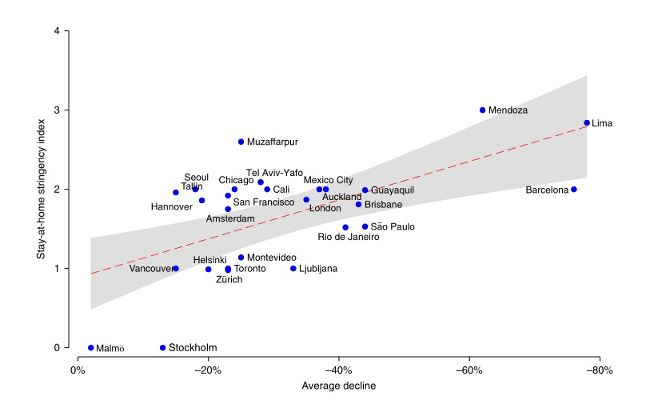

A Global Analysis of the Impact of COVID-19 Stay-At-Home Restrictions on Crime
From Natural Human Behaviour
Amy E. Nivette 1,2 ✉, Renee Zahnow 3, Raul Aguilar 4, Andri Ahven5, Shai Amram6, Barak Ariel 6,7,
María José Arosemena Burbano7, Roberta Astolfi8, Dirk Baier9, Hyung-Min Bark 10, Joris E. H. Beijers2,
Marcelo Bergman11, Gregory Breetzke 12, I. Alberto Concha-Eastman 13, Sophie Curtis-Ham 14,
Ryan Davenport15,16, Carlos Díaz17, Diego Fleitas 11, Manne Gerell 18, Kwang-Ho Jang19,
Juha Kääriäinen20, T apio Lappi-Seppälä 20, Woon-Sik Lim19, Rosa Loureiro Revilla7,
Lorraine Mazerolle 3, Gorazd Meško21, Noemí Pereda 22, Maria F. T. Peres 8,
Rubén Poblete-Cazenave 23, Simon Rose7,16, Robert Svensson 18, Nico T rajtenberg24,
T anja van der Lippe1, Joran Veldkamp1, Carlos J. Vilalta Perdomo 25 and Manuel P. Eisner 7, 26
Objective The stay-at-home restrictions to control the spread COVID-19 led to unparalleled(前所未有的) sudden change in daily life but it is unclear how they affected urban crime globally.
Methods We collected data on daily counts of crime in 27 cities across 23 counties in the Americas, Europe, the Middle East and Asia. We conducted interrupted time series analyses(间断时间序列分析) to assess the impact of stay-at-home restrictions on different types of crime (Assault, Burglary, Robbery, Theft, Vehicle theft, Homicide) in each city.
Results Our findings show that the stay-at-home policies were associated with a considerable drop in urban crime, but with substantial variation across cities and types of crime. Meta-regression results shower that more stringent restrictions over movement in public space were predictive of larger declines in crime.
Background
On 11 March 2020, the World Health Organization declared COVID-19 to be a public health emergency of global concern. National and local authorities moved to impose a range of measures to slow the spread of virus (“flatten the curve”). Collectively referred to as ‘lockdown’ measures in most countries, regulations have included some combination of stay-at-home orders, travel bans, closures of schools and places of entertainment and restrictions on public and private gatherings. Spatial mobility data suggest that, at the peak of the so-called lockdown—in late March and April 2020—daily movements related to retail and rec-
reation had declined by over 80% in many countries in Europe and Latin America.
Objective
In this study, we examine(调查) the extent(程度) to which stay-at-home restrictions in 27 cities in the Americas, Europe, the Middle East and Asia were associated with a change in levels of six types of police-recorded crime. The cities represent a large variation of measures relating to stay-at-home restrictions. They range from mostly voluntary recommendations to avoid public space to a complete halt (停止)of all but the most essential activities, based on emergency legislation and enforced by substantial penalties(实质性的处罚) for breaching the rules(违反规则).
Theory
Various theories of crime examine how sudden and persisting restraints on population movements caused by, for example, natural disasters, blackouts(停电) or epidemics affect crime levels.
Theories of individual and structural strain(个体应变与结构应变理论) suggest that such restraints(限制) increase levels of stress and negative emotions such as anxiety, frustration and anger, thereby leading to an increase in criminal motivations. In this vein(在这方面), social isolation and reduced freedom of movement associated with COVID-19 containment policies are anticipated to heighten levels of strain and reduce access to support with implications for child maltreatment, domestic violence and substance use(虐待儿童、家庭暴力和滥用药物).
Opportunity theory and routine activity theory, in contrast, suggest that stay-at-home policies interrupted the daily movements in time and space of suitable targets, capable guardians and motivated offenders on which most crime, especially crime in public space, feeds. They hence predict that crime levels fall as the mobility of entire urban populations is restricted. They hence predict that crime levels fall as the mobility of entire urban populations is restricted.
opportunity structures are specific to different types of crimes, and a change in opportunities for theft may not correlate with a change in opportunities for assault. For example, opportunities for certain property crimes, such as theft and robbery, depend on the daily flow of people into commercial areas and nearby transportation nodes that offer a high volume of suitable targets and access/exit paths for motivated offenders, and may hence have declined particularly strongly as a result of the lockdown measures. Similarly, as most people stayed at home throughout the day, fewer houses were left unsupervised(无监管) and residential burglary may have become much more difficult, while commercial buildings(商业建筑) likely became less supervised and hence an easier target.
Methods
Crime data
Daily crime data were collected from 27 cities representing 23 countries around the world. We sought daily crime data on assault, burglary, robbery, theft, vehicle theft and homicide for the current analyses.
The ‘date’ of the time series refers to the date the offence presumably occurred, as recorded by the police. In cases where this information was not available (that is, Amsterdam and São Paulo), the date of reporting was used.
The ‘treatment’ variable
The treatment effect of a city’s stay-at-home restrictions on crime incidents is measured using a dummy
variable(虚拟变量), whereby 1 represents the period in which restrictions were in place and 0 represents the period prior to (or following) the implementation of restrictions.
Covariates in ITS models
Climate data for cities were drawn from the National Centers for Environmental Information。
In addition, we include yearly population as an offset in all models. Population data for each city were drawn from the United Nations’ World Population Prospects(联合国-世界预期人口).
Interrupted time series analyses
The ITS analyses were estimated using Poisson generalized linear models with a logit-link function.
Meta-analyses
Due to the heterogeneous nature of lockdowns and crime definitions across countries, we used random-effects models to estimate summary effects.
Results
In this study, we examined trends in police-recorded crime in the period after the introduction of stay-at-home policies in 27 cities worldwide. Our findings show that the stay-at-home policies were associated with a substantial drop in urban crime. On average, the overall reduction in crime levels across all included cities was −37%. They suggest that the sudden decline in urban mobility triggered by the stay-at-home policies reduced opportunities and increased guardianship relating to many high-volume crimes. In other words, as expected by economic and criminological opportunity theories, we found strong evidence that crime levels respond quickly to changing opportunity structures and constraints, and that change in crime levels does not necessarily require large-scale changes in offender motivation. At least in the short run, the change in routine activities rather than the increase in psychological and social strains was the dominating mechanism that affected change in overall crime levels. We did not find evidence for or against displacement effects in the sense of a shift from one type of crime to another within the categories of crime covered in this paper. However, the lack of high-quality comparable data means that we could not examine the possibility that a substantial amount of coercive and property crime moved online, parallel to the sudden shift in daily routine activities.
Finally, we examined whether variation in the stringency of the lockdown was predictive of the amount of change in crime. Results show that more stringent limitations regarding requirements/recommendations to stay at home were associated with stronger declines in crime levels.The additional analyses suggest that it is mostly the stay-at-home requirements that were associated with larger declines, in that other containment policies were generally not significantly associated with declines, and the use of the overall stringency index generally did not substantially improve the models (Supplementary Table 21). We found few systematic differences in the ‘elasticity’ of different crime categories, that is, in the extent to which variation in the stringency of COVID-19-related restrictions was associated with change in crime levels. This suggests, surprisingly perhaps, that all crime categories included in this analysis responded similarly to variation in the extent of constraints on daily movement.

Our analyses suggest that stay-at-home policies played a crucial role. However, more fine-tuned analyses would be needed to understand the extent to which other measures (for example, closing bars, limiting public transport and closing schools) and variation in their enforcement were associated with variation in crime trends across places within a city.
An important area for future comparative research is to investigate the potential displacement of public-space crimes to non-contact offences such as fraud and cybercrime, which we were unable to measure here. There is some initial evidence of a significant increase of cybercrime during the strictest period of lockdown in the United Kingdom, which is interpreted as a displacement of crime opportunities from the offline to the online environment. Restrictions on public space may have also led to displacement of crime to private space.
Paper List That I Want To Read After Reading This Study
1、Bernasco, W ., Ruiter, S. & Block, R. Do street robbery location choices vary over time of day or day of week? A test in Chicago.
J. Res Crime. Delinq. 54, 244–275 (2017).
2、Mohler, G. et al. Impact of social distancing during COVID-19 pandemic on crime in Los Angeles and Indianapolis.
J. Crim. Justice 68, 101692 (2020).